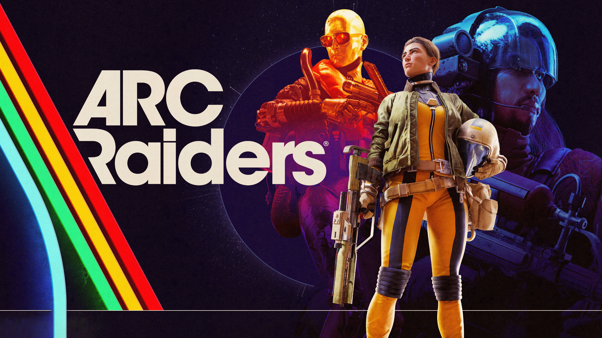

ARC Raiders Best Settings Guide (2025)

This guide covers the best ARC Raiders settings for performance, visibility, and smooth gameplay. These settings are optimized for competitive play and lower-end PCs as well.
Best Graphics Settings
- Resolution: Native
- V-Sync: Off
- Shadows: Medium
- Post Processing: Low
- Anti-Aliasing: Medium
Best FPS & Performance Settings
For maximum FPS, disable unnecessary visual effects and cap your frame rate slightly above your monitor refresh rate.
Visibility & Competitive Settings
- Motion Blur: Off
- Film Grain: Off
- Brightness: Adjust until dark areas remain visible
Conclusion
These ARC Raiders settings prioritize clarity and performance. Adjust slightly based on your hardware, but avoid high visual presets if you want competitive consistency.